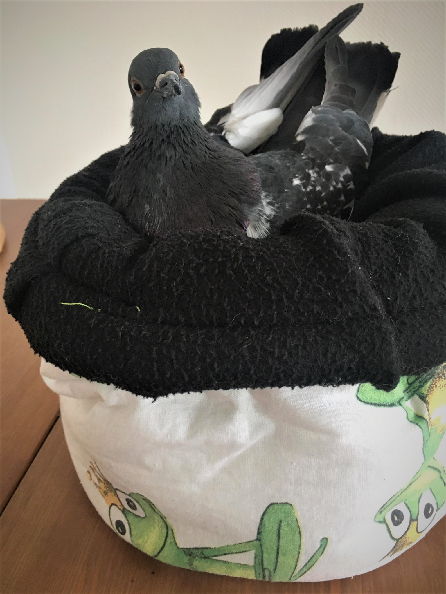
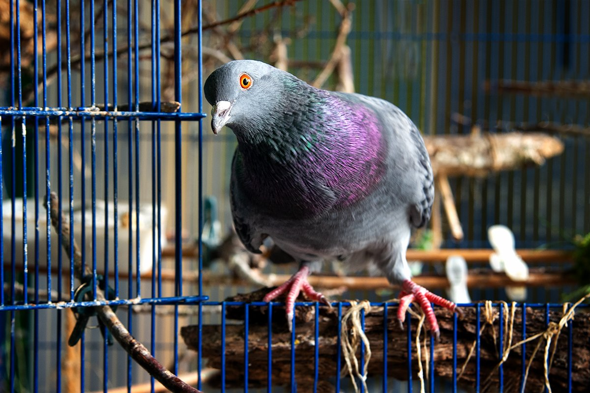

"The greatness of a nation and its moral progress can be judged by the way its animals are treated."
- Mahatma Gandhi -Meet the team
Unsere Arbeit
Wir setzen uns in unserer Freizeit ehrenamtlich für Berliner Stadttauben ein. Dabei betreuen wir täglich Futterplätze, sichern und versorgen (oft über Monate) verletzte oder erkrankte Stadttauben.
Für die Zukunft möchten wir uns auf regionaler Ebene mehr für die Rechte und gegen das stille Leiden der Stadttauben einsetzen und streben für Berlin das erfolgreiche Stadttaubenkonzept nach dem Augsburger Modell an.
Grundstück in Berlin gesucht!
März 2020 Derzeit sind auf der Suche nach einem Grundstück für einen eigenen Taubenschlag oder eine Voliere im Süden von Berlin (Steglitz/Schöneberg/Friedenau/Zehlendorf/Wilmersdorf).
Die Betreuung der Stadttauben und die Finanzierung würden wir komplett übernehmen.
Ideen oder konkrete Vorschläge gerne via startwithagrain@gmail.com.
Wir suchen deutschlandweit Endplätze !
März 2020Für unsere Pflegetauben sind wir auf der Suche nach artgerechten und liebevollen Endplätzen:
- Stadttauben mit diversen Behinderungen
- Stadttauben mit Paramyxovirose
- Handaufzuchten
- Brief- und Rassetauben
Tauben FAQ
Mitmachen

Wir freuen uns über neue Gesichter, die uns auf verschiedenen Ebenen aktiv unterstützen wollen.
Dabei gibt es vielseitige Tätigkeitsfelder, wie beispielsweise; Aufklärungsarbeit, Betreuung von Futterplätzen, Pflegestelle werden, Unterstützung bei Sicherungen, juristische Schreiben formulieren und und und.
Aktuell sind wir speziell auf der Suche nach Personen, die sich im Tierschutzgesetz sehr gut auskennen und Personen, die uns bei den täglichen Fütterungen im Süden von Berlin unterstützen wollen.
Des Weiteren suchen wir dringend deutschlandweit Endplätze für Stadttauben mit Behinderung, Stadttauben mit PMV und Brief- und Rassetauben.
Ihr möchtet das Leben der Berliner Stadttauben zum Positiven verändern?
Dann schreibt uns bei Facebook oder eine E-Mail, wir freuen uns auf dich.
Sachspenden
Wir freuen uns sehr über folgende Sachspenden:
- Aufzuchtfutter A21 - Nutribird
- Futtermischungen für Tauben
- Spritzen (1 ml, 5 ml, 10 ml, 20 ml)
- Wickelunterlagen für Einmalgebrauch
- Softboxen / geschlossener Welpenlaufstall
- Näpfe